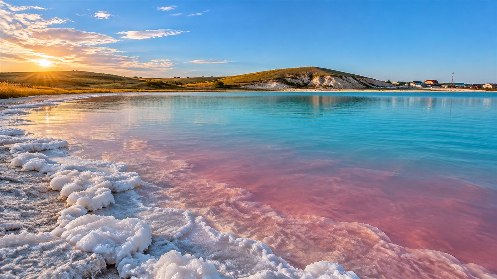
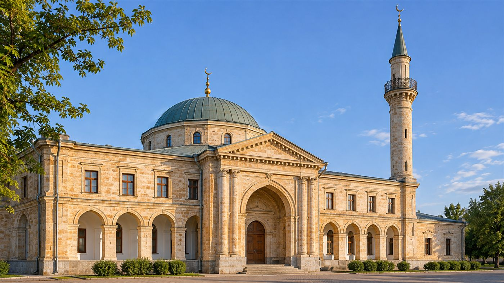

Открой Оренбуржье
Платформа о достопримечательностях Оренбургской области. Создана для туристов и путешественников от 16 лет, а также для краеведов Оренбуржья.
Найти местоБыстрый поиск по категориям
Начните вводить название — подсказки появятся сами.
Преимущества платформы
Удобная загрузка фотографий
Снимки загружаются в пару кликов.
Точные координаты на карте
Каждое место отмечено на карте.
Подробные описания от местных жителей
Истории и детали от краеведов.
Актуальная информация и отзывы путешественников
Свежие оценки помогают выбрать.
Популярные достопримечательности




Красоты Оренбуржья

Губерлинские горы
Скальные холмы и ковыльные степи Оренбуржья.

Ириклинское водохранилище
Чистая вода, острова и отличная рыбалка.

Оренбургская степь
Весной — ковёр из диких тюльпанов до горизонта.
Озеро Развал
Солёное озеро с целебной водой.
Наши партнёры